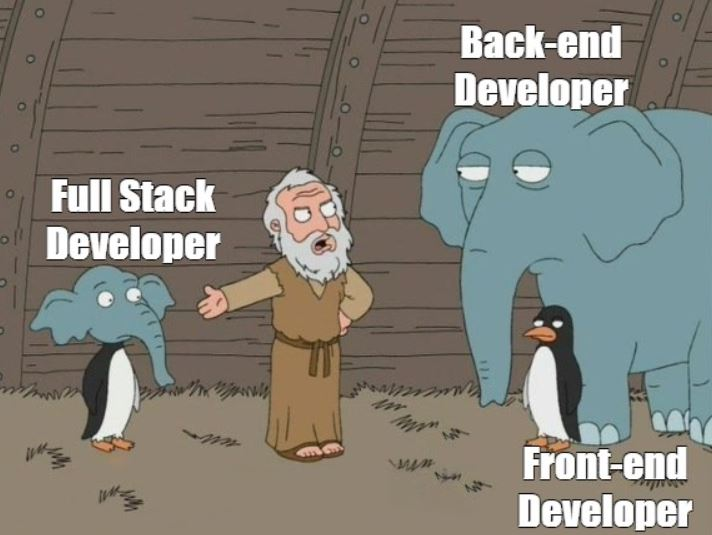

En la actualidad, aprender a programar está al alcance de todos. Con solo un dispositivo
con conexión a internet, se puede acceder a una infinidad de recursos de acuerdo
a las necesidades de cada uno.
A pesar de esto, en un mundo cada ves más dependiente de las computadoras para
prácticamente todo lo que hacemos, sigue habiendo un gran faltante de programadores
que puedan crear soluciones a nuestras necesidades.
En el siguiente video, varias voces de distintos ambitos explican sus visiones
acerca de porque todo el mundo debería conocer al menos las nociones básicas de
como programar:
Hay muchas salidas laborales en donde vas a poder implementar tus conocimientos. Tené en cuenta que la demanda en estos casos es muy dinámica y suele ir evolucionando con el correr del tiempo.
Algunas de las principales de este momento son:
- Data Science y Business Intelligence
- Especialista en Marketing Digital
- Diseñador Web y Mobile
- Diseñador de Experiencia de usuario (UX)
- Especialista en Redes
- Experto en Seguridad de la Información
- Responsable de infraestructura
- Especialista en Ecommerce
- Desarrollador Full-Stack

Y te preguntarás...¿Que lenguajes debo aprender? ¿Por donde empezar? Aqui debajo hay algunos de los más utilizados: